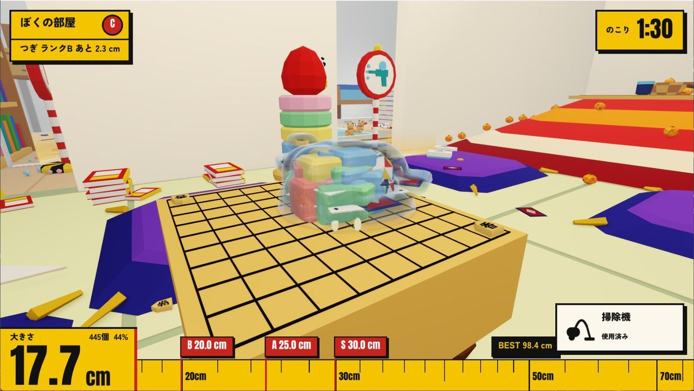

チリツモ
触れるだけで、飲む。飲むほど、大きくなる。

- 吸収触れた物を飲みこむ
- 成長5cmから家より大きく
- 舞台部屋 → 住宅街
- ジャンル
- 3D吸収アクション
- 期間
- 2026.04 – 制作中
- 人数
- 1名（個人制作）
- 担当
- 設計・実装すべて
- 環境
- C++20・DirectX 12
自作エンジン
スライムを操作して、部屋や街の物に触れて飲みこみながら大きくなっていく3D吸収アクション。自分より小さい物は通るだけで飲め、大きくなるほど、さっきまで壁だった物も飲めるようになる。ステージは「ぼくの部屋」（5cmから）と「住宅街」（1mから22mを目指す）の2つで、制限時間内にどれだけ大きくなれるかを競う。今の大きさは画面下の巻尺で見せ、飲みこむたびに「もぐもぐ」などの擬音が飛び出す。開発環境は C++20 / DirectX 12 / HLSL、自作エンジン neo_Engine（EnTT・Dear ImGui・DirectXTex・assimp・nlohmann json・DLSS）。エンジン・ゲームともに設計から実装まで一人で担当。3Dモデルは Blender の Python スクリプトで自作。
3Dモデルは自作。BGM・効果音・UIの一部にフリー素材（CC0 / CC BY）を使用